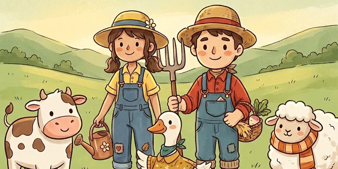

InfMasking: A Unified Variational Framework for Synergistic Multimodal Learning
IEEE Transactions on Pattern Analysis and Machine Intelligence, 2026.
I received my B.E. in Artificial Intelligence from the School of Computer and Artificial Intelligence, Southwestern University of Finance and Economics (SWUFE), Chengdu, China, in 2025 and am now pursuing a master's degree in Computer Science and Technology there, admitted through recommendation without an entrance examination.
My research interests include multimodal learning and contrastive learning. Currently, I focus on multimodal representation learning, cross-modal interaction, robust multimodal fusion.
* Equal contribution
First-author, co-first-author, and first-student-author work.
IEEE Transactions on Pattern Analysis and Machine Intelligence, 2026.
The Fortieth Annual Conference on Neural Information Processing Systems (NeurIPS), 2026.
The Thirty-ninth Annual Conference on Neural Information Processing Systems (NeurIPS), 2025.
IEEE Transactions on Pattern Analysis and Machine Intelligence, 2026.

Master's Degree in Computer Science and Technology · School of Computer and Artificial Intelligence
Recommended admission without entrance examinationBachelor of Engineering in Artificial Intelligence · School of Computer and Artificial Intelligence